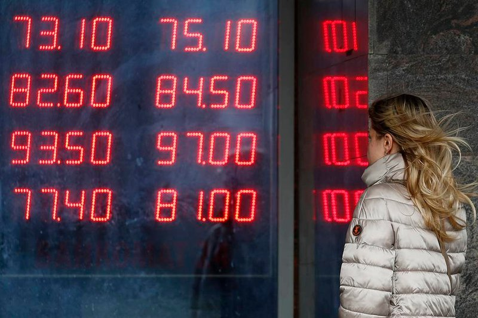

Main
Курс доллара вырос в понедельник на 57 копеек - до 79,39 руб., курс евро снизился на 1 копейку - до 87,72 руб. На открытии торгов вторника курс доллара снижается на 26 копеек - до 79,13 руб., курс евро падает на 69 копеек - до 87,03 руб. В понедельник российская валюта получила неожиданную поддержку. Как стало известно, президенты России и США Владимир Путин и Дональд Трамп в ходе телефонного разговора договорились о консультациях по рынку нефти по линии министров энергетики. Об этом сообщила пресс-служба Кремля. Продолжительный телефонный разговор состоялся в понедельник по инициативе американской стороны. "Проведен также обмен мнениями по текущему состоянию мирового рынка нефти. Условлено о российско-американских консультациях на этот счет по линии министров энергетики", — говорится в сообщении. После этого нефтяные котировки во вторник перешли к росту после мощного провала понедельника, но цены остаются около 18-летних минимумов, поскольку спрос стремительно падает на фоне распространения коронавирусa. Нефть марки Brent выросла во вторник на 0,8%, до 22,95 доллара за баррель после падения до 22,76 доллара на закрытии предыдущей сессии, самого низкого уровня закрытия с ноября 2002 года. «Президент Трамп призвал президента Путина обсудить вопрос нефти. Предположительно, он попытался вернуть Россию за стол переговоров с Саудовской Аравией или, возможно, даже готов ослабить санкции в отношении России», - предположил рыночный стратег AxiTrader Стивен Иннес, мнение которого приводит Рейтер. Очевидно, что перспектива ослабления санкций США против России может также косвенно оказать некоторую поддержку рублю.
- Все
- Очень
- Плохо
Впрочем, одним из основных факторов ослабления российской валюты остается динамика валют развивающихся экономик, считает Богдан Зварич из Промсвязьбанка. "При этом снижение цен на нефть было, фактически проигнорировано, иначе российская валюта понесла бы более серьезные потери. При этом в ближайшие сессии, в случае сохранения давления на валюты EM, доллар может попытаться выйти вверх из диапазона 75 – 80 рублей и закрепиться над его верхней границей", — цитирует его ПРАЙМ. Рынки продолжают подготовку к глобальной рецессии, риски дальнейшего снижения остаются повышенными, рассуждает Антон Покатович из компании "БКС Премьер". "Во вторник ожидаем курс в диапазоне 78-81 рубль за доллар. Риски понижения нефтяных цен до 20 долларов и ниже остаются актуальными, и в случае их реализации давление на рублевую валюту также будет возрастать", — добавил он. В самое ближайшее время настроение глобальных рынков будет во многом зависеть от дальнейшей ситуации с коронавирусом в США – как от динамики распространения болезни, так и от новых возможных ограничительных мер в связи с этим, считает Юрий Кравченко из ИК "Велес Капитал". "На российском рынке рубль продолжит следовать за динамикой цен на нефть, хотя продвижению доллара выше 80 рублей будет активно мешать ЦБ, наращивая продажи валюты. Негативным фактором для рубля остается возможное ужесточение карантинных мер на всей территории РФ, хотя в определенной степени ограничительные меры позволят несколько сократить спрос на валюту, в том числе по каналу наличных денежных средств", — добавил он.